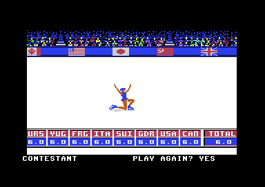
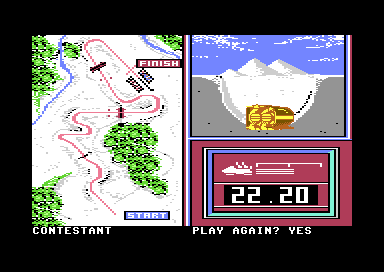

<meta charset="utf-8">
<meta name="viewport" content="width=device-width, initial-scale=1">
<title>Winter Games</title>
<link rel="preconnect" href="https://fonts.googleapis.com">
<link rel="stylesheet" href="https://fonts.googleapis.com/css2?family=Lato:wght@400;700;900&family=IBM+Plex+Mono:wght@400;500&display=swap">
<style>
:root{
  --bg:#23262d; --paper:#e9e7e1; --surface:#ffffff; --surface-2:#f1efea; --line:#d5d3cc; --line-soft:#e0ded8;
  --ink:#2f3136; --ink-soft:#55585f; --ink-mute:#80838a;
  --link:#1f5fa8; --link-hover:#154480; --accent:#1f5fa8;
  --amber:#c25a00; --cyan:#1f5fa8; --coral:#d04a3a; --green:#2a8a4a; --violet:#4a5bd6; --hl:#fff0c2;
  --chip:#2f3136; --chip-ink:#ffffff;
  --c64blue:#40318d; --c64grey:#686868;
  --fd:'Lato',system-ui,sans-serif; --fb:'Lato',system-ui,sans-serif; --fm:'IBM Plex Mono',ui-monospace,Menlo,monospace;
  --col:1080px; --gx:68px; --fs:17px; --lh:1.6; --hw:900; --h1:46px; --h2:26px; --sy:48px; --pp:26px; --r:10px;
  --plate-shadow:0 1px 2px rgba(0,0,0,.05),0 4px 14px rgba(0,0,0,.05);
}
*{box-sizing:border-box}
html{background:var(--bg);min-height:100%}
body{background:var(--paper);color:var(--ink);font-family:var(--fb);font-size:var(--fs);line-height:var(--lh);max-width:var(--col);margin:0 auto;min-height:100vh;padding:0 0 4rem}
h1,h2,h3{font-weight:var(--hw);letter-spacing:-.01em;text-wrap:balance;color:var(--ink);margin:0}
.wrap{padding:0 var(--gx)}
.hero{padding:48px var(--gx) 8px;text-align:left}
.eyebrow{font-family:var(--fm);font-size:12px;letter-spacing:.08em;text-transform:uppercase;color:var(--ink-mute);margin:0 0 10px}
.hero h1{font-size:var(--h1);line-height:1.15;letter-spacing:-.02em;margin:0 0 14px}
.hero .sub{margin:0 0 .6em;color:var(--ink-soft)}
section{padding:var(--sy) 0 24px}
section:last-of-type{border-bottom:none}
.fig{font-family:var(--fm);font-size:12px;letter-spacing:.08em;text-transform:uppercase;color:var(--ink-mute);margin:0 0 10px}
h2.t{font-size:var(--h2);margin-bottom:12px}
.lede{color:var(--ink-soft);margin:0 0 30px}
.plate{background:var(--surface);border:1px solid var(--line);border-radius:var(--r);padding:var(--pp);box-shadow:var(--plate-shadow)}
.cap{font-size:14px;color:var(--ink-mute);margin-top:14px;line-height:1.55}
.cap b{color:var(--ink);font-weight:700}
code{font-family:var(--fm);font-size:.82em;background:var(--chip);color:var(--chip-ink);border-radius:4px;padding:2px 6px;overflow-wrap:break-word;-webkit-box-decoration-break:clone;box-decoration-break:clone}
.wg-two{display:grid;grid-template-columns:1fr 1fr;gap:18px;align-items:start}
.wg-pic{width:100%;height:auto;image-rendering:pixelated;display:block;border-radius:4px}
.wg-canvas{width:100%;height:auto;display:block;border-radius:4px;background:#fff}
.wg-tab{border-collapse:collapse;width:100%;font-size:15px}
.wg-tab th,.wg-tab td{text-align:left;padding:5px 10px;border-bottom:1px solid var(--line-soft);vertical-align:top}
.wg-tab th{font-family:var(--fm);font-size:12px;letter-spacing:.06em;text-transform:uppercase;color:var(--ink-mute);font-weight:500}
.wg-tab td.n{font-family:var(--fm);text-align:right}
.wg-key{display:inline-block;width:12px;height:12px;border-radius:2px;vertical-align:-1px;margin-right:4px}
.wg-ctl{display:flex;flex-wrap:wrap;gap:10px 18px;align-items:center;margin:0 0 14px;font-size:15px}
.wg-ctl label{display:flex;gap:6px;align-items:center}
.wg-out{font-family:var(--fm);font-size:15px;background:var(--surface-2);border-radius:6px;padding:10px 14px;margin-top:12px}
@media (max-width:700px){:root{--gx:16px;--h1:34px}.wg-two{grid-template-columns:1fr}}
</style>
<!-- tabs -->
<header class="hero">
  <p class="eyebrow">1985 · Epyx</p>
  <h1>Winter Games</h1>
  <p class="sub">What the code does that the manual never says: a judge's sum that wraps round, a crash that costs a tenth of a second, a key that only works with the joystick held down, and a sound effect that writes into the sky.</p>
</header>
<main class="wrap">

<section data-part="skating">
  <p class="fig">01 · Figure Skating</p>
  <h2 class="t">Bug: in Figure Skating, falling 19 to 28 times scores a perfect 6.0</h2>
  <p class="lede">A program of nothing but falls, about twenty of them, gets 6.0 from all eight judges. The C64-Wiki gives it as a cheat.</p>
  <div class="plate">
    <div class="wg-two">
      <div>
        <canvas id="wg-falls" class="wg-canvas" width="560" height="320"></canvas>
        <div class="wg-out" id="wg-falls-out">Point at the chart.</div>
      </div>
      <figure style="margin:0"><figcaption class="cap">The program in the emulator, played with the joystick alone: stick down with fire 22 times, and nothing else. Every judge gives 6.0.</figcaption></figure>
    </div>
    <p class="cap">The base mark for each number of falls, from the game's own <a href="source-skating.html#1CFA"><code>base_mark</code></a> run on the listing's bytes: with no element skated (<span class="wg-key" style="background:#d04a3a"></span>) and with all seven skated cleanly (<span class="wg-key" style="background:#1f5fa8"></span>). <code>test_marks.js</code> checks it against the routine, and against the two programs played in the emulator: 22 falls scored 6.0 and 40 scored 0.0.</p>
  </div>
  <p>Figure Skating adds up the elements skated, takes 0.2 off for each awkward move and 0.7 for each fall, and keeps the result between 0 and 6.0. The mark is one byte, in tenths. After each subtraction the code tests the result with <code>BPL</code>, the 6502's "branch if plus", which looks only at the byte's top bit. A result from 128 to 255 counts as below zero and becomes 0. That works while the penalty is small. Once it is larger than the mark by more than 128, the byte wraps round past zero to a number under 128, and the test lets it through.</p>
  <p>With no elements the mark starts at 0, and 19 falls take off 133 tenths. The byte wraps round to 123, which the cap then cuts to 60: a 6.0. Every count from 19 to 28 lands between 61 and 123 and is cut to 6.0 the same way. From 29 falls the wrapped number drops under the cap again, 5.3 at 29, and from 37 falls the result is below zero once more and becomes 0. The judges add nothing to a 6.0, as they add nothing to a 0, so all eight show it exactly.</p>
  <p>A fall is the easiest move there is: stick down with fire, from skating forward. In the emulator a skater fell about every 1.7 seconds, so the minute holds 19 with time to spare. Free Skating has the same signed test, but there each fall also lowers a ceiling of 6.0 by 0.2, which holds a wrapped penalty down: 26 falls give 0.8.</p>
</section>

<section data-part="skating">
  <p class="fig">02 · Free Skating</p>
  <h2 class="t">Bug: every Free Skating mark below 6.0 is a tenth short</h2>
  <p class="lede">Free Skating subtracts one tenth more than its rules say, from every program, falls or no falls.</p>
  <div class="plate">
    <table class="wg-tab" id="wg-free">
      <thead><tr><th>Program</th><th style="text-align:right">By the rules</th><th style="text-align:right">The game</th></tr></thead>
      <tbody></tbody>
    </table>
    <p class="cap">"The game" is the base mark from <a href="source-skating.html#1D5C"><code>free_mark</code></a>, run on the listing's bytes for each program. "By the rules" adds up the values the manual gives each element, takes 0.5 off for a fall and keeps the result under the ceiling, as the code means to. A program worth more than its ceiling is cut down to it, and loses nothing.</p>
  </div>
  <p>The 6502 subtracts with its carry flag: <code>SBC</code> takes one more off when the carry is clear, so a subtraction normally starts with <code>SEC</code> to set it. Free Skating's fall penalty is worked out as five times the falls with an <code>ADC</code>, which leaves the carry clear, and the <code>SBC</code> that follows has no <code>SEC</code> before it. So the mark loses a tenth even when there are no falls at all. Figure Skating's version of the same code has its <code>SEC</code>.</p>
</section>

<section data-part="bobsled">
  <p class="fig">03 · Bobsled</p>
  <h2 class="t">A bobsled crash near the end costs only a tenth of a second</h2>
  <p class="lede">A crash is meant to score 99.99. But the wreck keeps sliding down the course, and a crash late enough slides over the line and scores the clock's time.</p>
  <div class="plate">
    
    <p class="cap">Played with the joystick alone: steered down the middle to stretch 164, then held left into the wall. The sled crashed at stretch 168 and the wreck slid over the line: 22.20. The same run steered clean all the way finished in 22.10.</p>
  </div>
  <p>Ten frames in a row against a wall is a crash (<a href="source-bobsled.html#42D3"><code>check_walls</code></a>). After it the stick does nothing, but the course keeps moving while the wreck has speed, and the speed drops only one step in every three frames (<a href="source-bobsled.html#4305"><code>crash_step</code></a>). From full speed that is about two seconds, and a dozen stretches of sliding. Only when the speed reaches zero does the run end with 99.99. If the wreck reaches the finish first, the finish records the time on the clock, as for any run.</p>
  <p>The last seven stretches are the finish straight, where the sled steers itself to the middle and cannot crash. The stretches just before it are a straight, where holding the stick against a wall is enough. In the emulator a crash at stretch 168 slid over the line, and one at 164 stopped right at it and scored 99.99.</p>
</section>

<section data-part="hot-dog">
  <p class="fig">04 · The S key</p>
  <h2 class="t">Secret: S stops the music, but only with joystick 2 held down</h2>
  <p class="lede">Five events check the S key once a frame to switch the sound off. Pressed on its own, it does nothing.</p>
  <div class="plate">
    <table class="wg-tab">
      <thead><tr><th>Event</th><th>The switch</th><th style="text-align:right">As the file holds it</th></tr></thead>
      <tbody>
        <tr><td>Hot Dog Aerials</td><td><a href="source-hot-dog.html#6332"><code>$6332</code></a></td><td class="n">$77</td></tr>
        <tr><td>Biathlon</td><td><a href="source-biathlon.html#7884"><code>$7884</code></a></td><td class="n">$FE</td></tr>
        <tr><td>Figure and Free Skating</td><td><a href="source-skating.html#4E6A"><code>$4E6A</code></a></td><td class="n">$01</td></tr>
        <tr><td>Ski Jump</td><td><a href="source-ski-jump.html#6C36"><code>$6C36</code></a></td><td class="n">$00</td></tr>
        <tr><td>Bobsled</td><td><a href="source-bobsled.html#9E30"><code>$9E30</code></a>, at <code>$C130</code> once copied</td><td class="n">$01</td></tr>
      </tbody>
    </table>
    <p class="cap">A press of S, seen while the switch is not 0, sets it to 0 and stops every sound; a press seen while it is 0 sets it to 1 and does nothing else. In Ski Jump, whose file holds 0, the first press does nothing and the second stops the sound. Tested in the emulator in Hot Dog.</p>
  </div>
  <p>The C64's keyboard is a grid of eight columns and eight rows wired to CIA 1, the chip that also reads the joysticks. A program finds a key by driving one column low on port A and reading which rows are low on port B. The sound engine's <code>sound_step</code> does this for S every frame: it writes <code>$FD</code> to port A and looks for S's row on port B (<a href="source-hot-dog.html#63AD"><code>$63AD</code></a>). But every event's start-up has set port A to input, by writing 0 to its direction register at <code>$DC02</code>. A port set to input drives nothing, so the engine's write never selects the column, and S never shows.</p>
  <p>Joystick 2 is wired to port A too. Pushing it down pulls the very line the engine meant to drive, the second one, low. With the stick held down, the column is selected after all, and S works. The engine stops every sound playing, the event's music with it; sounds the event starts later play as usual. Speed Skating's older engine has no S key.</p>
</section>

<section data-part="">
  <p class="fig">05 · The clocks</p>
  <h2 class="t">Every clock in the game runs a fifth slow on a PAL machine</h2>
  <p class="lede">Times on a European C64 are shorter than the time it takes to skate them.</p>
  <p>Every event counts its clock in frames: six frames to a tenth of a second, sixty to a second (Biathlon's <a href="source-biathlon.html#73AC"><code>clock_tick</code></a>, Skating's <a href="source-skating.html#1DE3"><code>clock_tick</code></a>, Bobsled's <a href="source-bobsled.html#4B80"><code>clock_tick</code></a>, Speed Skating's <a href="source-speed-skating.html#964B"><code>irq_top</code></a>). That is right for an American machine, whose screen is drawn sixty times a second. A European machine draws fifty, so each second on the clock takes 1.2 real seconds. A 22.10 bobsled run takes 26.5 seconds, and Figure Skating's minute lasted about 72 seconds in the emulator. The skating music is timed in frames too, so it still fits the program: Figure Skating's tune lasts 3,633 frames and Free Skating's 7,203.</p>
  <p>The tunes and effects are tuned for the same machine. Every event's table of notes puts top C at <code>$430F</code>, which is 1,046.5 Hz on an American C64, where the sound chip runs at 1.02 MHz. A European C64 runs it at 0.985 MHz, and every note sounds two-thirds of a semitone flat.</p>
</section>

<section data-part="bobsled">
  <p class="fig">06 · Bobsled</p>
  <h2 class="t">Bug: the bobsled's rumble writes into the sky</h2>
  <p class="lede">The runners' sound picks a random note every frame, and also stores a random number in a part of the screen's picture.</p>
  <p>The rumble is a sound script that calls a few bytes of machine code each frame (<a href="source-bobsled.html#A50F"><code>rumble_step_src</code></a>, run at <code>$C80F</code>). The code picks a random note, then a random length, and stores the length three bytes into the sound's slot, through a pointer in zero page. It uses the pointer at <code>$F0</code>. The engine keeps its slot pointer at <code>$80</code>. So the length never reaches the slot, whose count stays at 1, and the note changes every frame, which is what makes it rumble.</p>
  <p>The byte goes wherever <code>$F0</code>-<code>$F1</code> points. Those two bytes belong to the KERNAL, the machine's own operating system, which keeps a table of the screen's lines there. The event never sets them, and they hold <code>$87</code>, <code>$87</code>, so the store lands at <code>$878A</code>. That is one byte of the far view's sky panorama (<a href="source-bobsled.html#8400"><code>far_panorama</code></a>). In the emulator <code>$878A</code> took values from 1 to 8 during a run. The far view copies the panorama to the screen as it turns, and four pixels of sky in far pieces 21 to 25 show whatever number was there last.</p>
</section>

<section data-part="bobsled">
  <p class="fig">07 · Bobsled</p>
  <h2 class="t">Bug: the crash has a whistle no one can hear</h2>
  <p class="lede">A crash starts a sound on the sound chip's third voice, and the same sound switches that voice off.</p>
  <p>The crash plays sound 28 (<a href="source-bobsled.html#A65E"><code>snd_crash_whistle_src</code></a>): a triangle wave on the third voice, whistling upward for 106 frames. Its script also sets the filter mode, and the mode it writes to <code>$D418</code> has bit 7 set. On the SID, that bit takes the third voice out of the output unless the filter takes it in, and the script routes the voice past the filter. So the whistle plays to nobody. The bit stays set until every sound is stopped at the end of the run, and in the emulator the engine's copy of <code>$D418</code> held <code>$8F</code> from the crash on.</p>
</section>

<section data-part="menu">
  <p class="fig">08 · The menu</p>
  <h2 class="t">Secret: the menu knows nine Summer Games events</h2>
  <p class="lede">After Bobsled, the menu's list of event names runs on into Epyx's two earlier games.</p>
  <p>The table of event names (<a href="source-menu.html#1639"><code>event_names</code></a>) has sixteen entries. After the seven winter events come Cycling, Pole Vault, Platform Diving, 4 x 400 m Relay, 100 m Dash, Gymnastics, Freestyle Relay, 100 m Freestyle and Skeet Shooting, events of Summer Games and Summer Games II. A switch at <code>$087F</code> would make the menu list all sixteen, from A) to P), and show "YES)" at the end of option 6's line (<a href="source-menu.html#0FF3"><code>opt_more_events</code></a>). Nothing in the game sets the switch, and the disks have no files for those events.</p>
</section>

</main>
<footer style="margin:16px 0 0;padding:22px var(--gx) 0;border-top:1px solid #e0ded8;font-family:'IBM Plex Mono',ui-monospace,Menlo,monospace;font-size:12px;color:#80838a"><a href="https://github.com/gamesexplained/gamesexplained" style="color:#1f5fa8;text-decoration:none">GitHub</a> · <a href="https://discord.gg/3V9GWyRDWV" style="color:#1f5fa8;text-decoration:none">Discord</a><br>© Games Explained contributors. Write-ups, facts and symbol maps are available under <a href="https://creativecommons.org/licenses/by-sa/4.0/" style="color:#1f5fa8;text-decoration:none">CC BY-SA 4.0</a>; code under <a href="https://opensource.org/licenses/MIT" style="color:#1f5fa8;text-decoration:none">MIT</a></footer>

<script src="../../lib/c64.js"></script>
<script src="../../lib/cpu6502.js"></script>
<script>
/* wg-marks */
// wgMark(ram, Cpu, mode, falls, awkward, elements): the skating program's base mark in tenths, from
// the game's own base_mark ($1CFA) run on the kit's 6502 over the skating part's listing (ram). The
// program leaves the mode at $70 (0 Figure Skating, 1 Free), the falls at $46, the awkward moves at
// $47, and the elements begun at $4A on, their count at $49 (1 the camel spin, 2 the sit spin, 3 and
// 5 the double and triple lutz, 4 and 6 the double and triple axel, 7 the camel into sit spin);
// base_mark leaves the mark at $26.
function wgMark(ram, Cpu, mode, falls, awkward, elements) {
  const m = ram.slice();
  const io = {
    read(a) { throw new Error('read $' + a.toString(16)); },
    write(a) { throw new Error('write $' + a.toString(16)); },
  };
  const cpu = new Cpu.CPU(m, { port: 0x35, io });
  m[0x70] = mode; m[0x46] = falls & 255; m[0x47] = awkward & 255; m[0x49] = elements.length;
  elements.forEach((e, i) => { m[0x4A + i] = e; });
  cpu.call(0x1CFA, {}, { maxSteps: 10000 });
  return m[0x26];
}
// end of wg-marks
</script>
<script>
const $ = (id) => document.getElementById(id);

// ---- 01: base_mark against the falls, with no element and with all seven
function falls(ram) {
  const cv = $('wg-falls'), ctx = cv.getContext('2d'), W = cv.width, H = cv.height;
  const all = [1, 2, 3, 4, 5, 6, 7];
  const none = [...Array(41)].map((_, f) => wgMark(ram, C64Cpu, 0, f, 0, []));
  const seven = [...Array(41)].map((_, f) => wgMark(ram, C64Cpu, 0, f, 0, all));
  const x0 = 46, x1 = W - 14, y0 = H - 36, y1 = 14;
  const px = (f) => x0 + f / 40 * (x1 - x0), py = (m) => y0 - m / 60 * (y0 - y1);
  const draw = (hi) => {
    ctx.fillStyle = '#fff'; ctx.fillRect(0, 0, W, H);
    ctx.font = '13px "IBM Plex Mono", monospace'; ctx.fillStyle = '#80838a'; ctx.textAlign = 'right';
    for (let m = 0; m <= 60; m += 20) { ctx.fillText((m / 10).toFixed(1), x0 - 6, py(m) + 4); ctx.strokeStyle = '#eee'; ctx.beginPath(); ctx.moveTo(x0, py(m)); ctx.lineTo(x1, py(m)); ctx.stroke(); }
    ctx.textAlign = 'center';
    for (let f = 0; f <= 40; f += 10) ctx.fillText(String(f), px(f), y0 + 18);
    ctx.fillText('falls', (x0 + x1) / 2, H - 2);
    if (hi !== undefined) { ctx.fillStyle = '#fff0c2'; ctx.fillRect(px(hi) - 5, y1, 10, y0 - y1); }
    for (const [d, c] of [[seven, '#1f5fa8'], [none, '#d04a3a']]) {
      ctx.strokeStyle = c; ctx.lineWidth = 2.5; ctx.beginPath();
      d.forEach((m, f) => { f ? ctx.lineTo(px(f), py(m)) : ctx.moveTo(px(f), py(m)); }); ctx.stroke();
      ctx.fillStyle = c; d.forEach((m, f) => { ctx.beginPath(); ctx.arc(px(f), py(m), 2.5, 0, 7); ctx.fill(); });
    }
  };
  const pick = (e) => {
    const r = cv.getBoundingClientRect(), f = Math.max(0, Math.min(40, Math.round(((e.clientX - r.left) / r.width * W - x0) / (x1 - x0) * 40)));
    draw(f);
    $('wg-falls-out').textContent = f + ' fall' + (f === 1 ? '' : 's') + ': ' + (none[f] / 10).toFixed(1) + ' with no element, ' + (seven[f] / 10).toFixed(1) + ' with all seven';
  };
  cv.addEventListener('mousemove', pick); cv.addEventListener('click', pick);
  draw(22);
  $('wg-falls-out').textContent = '22 falls: ' + (none[22] / 10).toFixed(1) + ' with no element, ' + (seven[22] / 10).toFixed(1) + ' with all seven';
}

// ---- 02: Free Skating's programs, by the rules and by free_mark
function free(ram) {
  const values = [0, 3, 3, 2, 2, 4, 4, 5];
  const rows = [
    ['One camel into sit spin', [7]], ['The camel spin three times', [1, 1, 1]],
    ['All seven elements once', [1, 2, 3, 4, 5, 6, 7]], ['All seven once, and one fall', [1, 2, 3, 4, 5, 6, 7], 1],
    ['All seven three times', [1, 2, 3, 4, 5, 6, 7, 1, 2, 3, 4, 5, 6, 7, 1, 2, 3, 4, 5, 6, 7]],
  ];
  const body = $('wg-free').querySelector('tbody');
  for (const [name, list, fallsN] of rows) {
    const f = fallsN || 0;
    const sum = list.reduce((s, e) => s + values[e], 0), ceiling = 60 - 2 * f;
    const rule = Math.max(0, Math.min(ceiling, sum - 5 * f));
    const game = wgMark(ram, C64Cpu, 1, f, 0, list);
    const tr = document.createElement('tr');
    tr.innerHTML = '<td>' + name + '</td><td class="n">' + (rule / 10).toFixed(1) + '</td><td class="n">' + (game / 10).toFixed(1) + '</td>';
    body.appendChild(tr);
  }
}

if (typeof C64 === 'undefined' || typeof C64Cpu === 'undefined') {
  $('wg-falls-out').textContent = 'The site\'s scripts did not load, so this widget cannot run here.';
} else {
  C64.load('parts/skating/listing.json').then((L) => { falls(L.ram); free(L.ram); });
}
</script>
